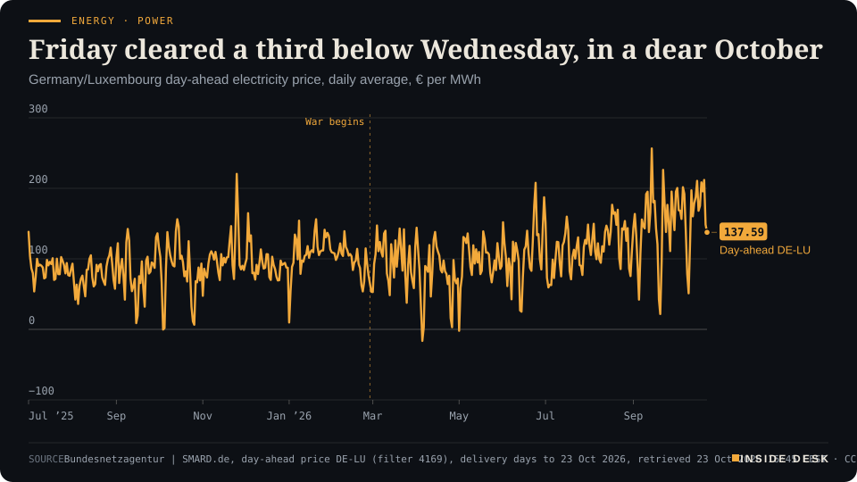
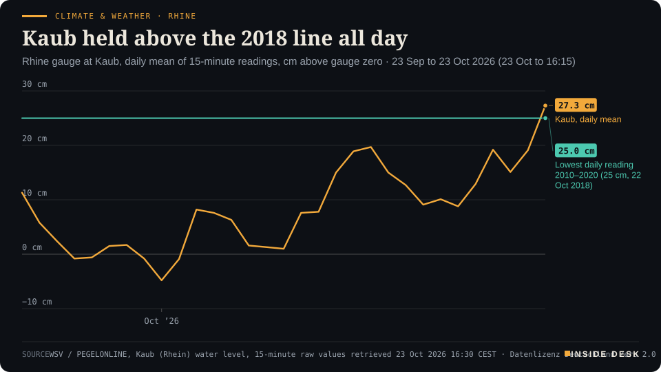

Inside Desk ePaper, Evening ePaper · Fri 23 Oct 2026
Friday, 23 October 2026Always free
Inside Desk
Evening ePaperPublished 18:40 CEST · Berlin
Lead · Ordinary & Inherited Life
Wholesale power for Friday cleared at €137.59, a third below Wednesday, because the wind came back. Heating oil rose to €174.25 because Brent did. Your winter has two meters, and only one of them blows in from the North Sea.
Wholesale power fell by a third because the wind came back; heating oil and Brent kept climbing because the Gulf did not calm down. Europe's business surveys cooled, chip stocks learned what "off the charts" costs, and the Rhine at Kaub held above its 2018 line all day.
Energy · PowerFriday cleared a third below Wednesday, in a dear OctoberGermany/Luxembourg day-ahead electricity price, daily average, € per MWh

Line chart of the daily average German-Luxembourg day-ahead electricity price since July 2025, in euros per megawatt hour. Prices stay mostly between about €77 and €110 a month through July 2026, with a daily low of −€16.34 on 5 April 2026. They climb from August, average €144.82 in September with a daily high of €256.55 on 14 September, and average €167.60 over 1 to 23 October 2026, against €94.97 over the same days of 2025. The latest value, for delivery on Friday 23 October 2026, is €137.59, down from €148.61 on Thursday and €211.94 on Wednesday.
Source: Bundesnetzagentur | SMARD.de, day-ahead price DE-LU (filter 4169), delivery days to 23 Oct 2026, retrieved 23 Oct 2026 16:45 CEST · CC BY 4.0 · CSV
Geo-economics · p. 5
Markets & Macro · p. 7
Energy & Industry · p. 11
Climate & Weather · p. 17
The day in one sentenceThe wind made Friday's electricity cheaper, the Gulf made oil dearer, and a survey of purchasing managers told the ECB it can afford to wait.
ContentsInside Desk · Evening ePaper23 October 2026
Wholesale power fell by a third because the wind came back; heating oil and Brent kept climbing because the Gulf did not calm down. Europe's business surveys cooled, chip stocks learned what "off the charts" costs, and the Rhine at Kaub held above its 2018 line all day.
11 edition pieces · 11 desks · Published 18:40 CEST, 23 October 2026
22 ePaper extras, added , 23 October. They appear only in the ePaper and carry their own time.
17:30 Evening ePaper, updated live until 22:30 with an “Updated” time and a Latest page
Sun 10:00 The Sunday Magazine
Berlin time. Every issue is free.
How to read it
Swipe, use the arrow keys or the page strip. Tap any headline for the reading view. Press / to search, t for contents, +/− to zoom. Download the PDF.
LatestInside Desk · Evening ePaper23 October 2026
Latest
Live: this page and the issue are updated until 22:30 Berlin time.
Evening ePaper published. No updates yet.
LeadInside Desk · Evening ePaper23 October 2026
Ordinary & Inherited Life · Lead · 2 min
Wholesale power for Friday cleared at €137.59, a third below Wednesday, because the wind came back. Heating oil rose to €174.25 because Brent did. Your winter has two meters, and only one of them blows in from the North Sea.
Two prices reached German households on Friday, and they moved in opposite directions.
The first is the wholesale price of electricity. Friday’s day-ahead auction for Germany and Luxembourg cleared at an average of €137.59 per megawatt hour, after €148.61 for Thursday and €211.94 for Wednesday1. Desk arithmetic: Friday is 35% cheaper than Wednesday.
Energy · PowerFriday cleared a third below Wednesday, in a dear OctoberGermany/Luxembourg day-ahead electricity price, daily average, € per MWh
Line chart of the daily average German-Luxembourg day-ahead electricity price since July 2025, in euros per megawatt hour. Prices stay mostly between about €77 and €110 a month through July 2026, with a daily low of −€16.34 on 5 April 2026. They climb from August, average €144.82 in September with a daily high of €256.55 on 14 September, and average €167.60 over 1 to 23 October 2026, against €94.97 over the same days of 2025. The latest value, for delivery on Friday 23 October 2026, is €137.59, down from €148.61 on Thursday and €211.94 on Wednesday.
Source: Bundesnetzagentur | SMARD.de, day-ahead price DE-LU (filter 4169), delivery days to 23 Oct 2026, retrieved 23 Oct 2026 16:45 CEST · CC BY 4.0 · CSV
Why it fell. No minister did this. The weather did. Onshore wind turbines generated 673,227 megawatt hours on Thursday, against 242,281 on Wednesday, and gas-fired plants dropped from 241,432 to 123,316 megawatt hours2. Desk arithmetic: wind nearly tripled, gas halved. When the wind blows, the most expensive plant needed to meet demand is less often a gas turbine, and the whole auction clears lower.
Why it is still dear. One windy day does not make a cheap month. Over 1 to 23 October the day-ahead price averaged €167.60, against €94.97 over the same days of 20251. Desk arithmetic: about three quarters higher. September averaged €144.821. Most households do not pay the day-ahead price directly; their supplier buys ahead and passes costs on later. The wholesale line is the weather report for next year’s tariff, not this month’s bill.
The second price. Heating oil climbed to a German average of €174.25 per 100 litres on Friday, 0.90% more than Thursday, €4.96 more than a week ago and €40.21 more than three months ago3. It follows crude, and crude followed the war: Brent touched $115.16 in London trading, its highest since 4 May, after Houthi attacks on Saudi Arabia and reports of plans for renewed strikes on Iran4. No wind farm helps a tank in the cellar.
The promise in the middle. On Thursday the sixteen state premiers asked Berlin to cut the electricity tax “as quickly as possible”. On Friday the deputy government spokesman said the goal stands, but “under a financing proviso”, and named no date5. Our Politics desk weighs that promise against its price tonight.
What this means for you. Three things are worth separating. A windy week lowers the wholesale price you mostly do not pay yet. A war lowers nothing; it raises the oil and gas prices you pay directly, quickly. A tax cut lowers a bill only after it is law, financed and passed on. None of the three is in your hands. What is in your hands is the reading on your own meter and the size of your own order. Those numbers do not care about speeches.
The constructive reading. Every number in this piece was public and free by Friday afternoon: an auction result from the regulator’s own platform, a generation count by fuel, a daily price average from thousands of orders1,2,3. A household in 2026 can see its winter coming in better detail than a utility could twenty years ago. That is not comfort. It is information, and information is the start of a plan. Nothing here is advice.
Geo-economicsInside Desk · Evening ePaper23 October 2026
Geo-economics · Podium vs Print · 2 min
The US president says more oil now passes Hormuz than before the war. The public ship counter logged six commercial crossings on Thursday, against a pre-war baseline of 84.8 a day. Both cannot be the whole picture.
Podium
“More oil is coming through the Hormuz Strait now than it did even prior to the beginning of the conflict.”
Donald Trump, President of the United States, on Truth Social, 22 October 2026
Print6 crossings
Six AIS-visible commercial crossings on 22 October, one of them a tanker, against a pre-crisis baseline of 84.8 a day.
hormuz.now AIS counter, Strait of Hormuz traffic, Thursday 22 October 2026, complete UTC day
The podium. On Thursday President Trump accused Iran of trying to push up oil prices before the midterm elections. “They are making up fake hits, mines, and everything else,” he wrote, “because more oil is coming through the Hormuz Strait now than it did even prior to the beginning of the conflict”1. A US Central Command spokesperson told Al Jazeera the strait remains open, “with 95 percent of vessels getting through”1.
The print. The hormuz.now counter, which tracks ship transponder (AIS) signals, logged six commercial crossings for the complete UTC day of Thursday 22 October: five into the Gulf, one out, and one of the six a tanker2. Its pre-crisis baseline is 84.8 crossings a day2. By 14:28 UTC on Friday it had five more, two of them tankers, and its rolling seven-day average stood at 4.1 a day3. Desk arithmetic: Thursday was about 7% of a pre-war day.
The fine print in the print. The counter says plainly that its counts are “AIS-visible only and miss ships running dark”3. That matters here. Lloyd’s List Intelligence reported on Thursday that tankers willing to risk the voyage have been moving at night through a US-protected lane near Oman, with location systems and mobile phones switched off, and transferring oil to other tankers in the Gulf of Oman4. So the true figure is higher than six. Nobody outside the navies knows how much higher.
The gap. “95 percent of vessels getting through” is a share of those that try. It says nothing about how many try. “More than before the war” is a volume claim, and no public count supports it. The counter is incomplete in a known direction; the claim is complete in no direction at all.
Verdict. The podium offers a number without a ledger. The print offers a ledger with a declared blind spot. When IMF PortWatch publishes its own count for these days, you will have a second, independent ledger. Until then, a statement that more oil flows than before the war should be treated as an opening bid. Nothing here is advice.
Geo-economics · Short item · ePaper extra, added
Germany and Turkey brought four Europeans and four regional powers together for the first time. The agenda: Hormuz, Bab al-Mandab and the Black Sea.
At the initiative of Germany and Turkey, the foreign ministers of Germany, France, the United Kingdom and Italy met in Istanbul on Friday for the first time with Turkey, Egypt, Pakistan and Saudi Arabia1. The subject was freedom of navigation1.
The Foreign Office spelt out the stakes in numbers. Around 12% of global maritime trade passes through the Bab al-Mandab strait, where the Houthis have stepped up attacks since July; about a fifth of the oil consumed worldwide passes through Hormuz1. In the Black Sea, Russian attacks have brought Ukrainian grain exports to a virtual standstill since July, on a route that once carried around 30% of global wheat trade1.
“We do not accept that Iran and the Houthi militia are blackmailing world trade,” Johann Wadephul said1. The release also points to a precedent: the UN-mediated Black Sea Grain Initiative of 2022 showed that agreements can improve access to food1.
A first meeting in a new format produces a photo, not a corridor. But the format itself is the news: the buyers and the regional powers in one room, about routes rather than slogans. That is how the 2022 grain deal started too.
Geo-economicsInside Desk · Evening ePaper23 October 2026
Geo-economics · Brief · ePaper extra, added
India’s commerce minister, Piyush Goyal, said on Thursday that the trade deal with the European Union should be signed before the end of 2026 and become operational by March 20271. He called it the “fastest trade deal” the EU has entered into1. The deal, announced in January after more than two decades of talks, covers partners that together make up about 25% of global GDP1. In a week of blockades, a tariff schedule with a start date is the quiet good news.
Markets & MacroInside Desk · Evening ePaper23 October 2026
Markets & Macro · 2 min
Brent touched a five-month high, US crude stayed above $100 and the Dow fell 600 points. The ten-year Treasury yield, which had its biggest one-day fall since 2023 on Thursday, stayed just under 5%. Two scares, two different shelters.
Friday had two stories, and they asked investors for opposite things.
The oil story. Brent crude futures reached $115.16 a barrel in London, the highest since 4 May, and stood at $114.99 by 13:00 GMT; US crude was at $101.272. Reuters had Brent on course for a 4.4% weekly rise, its third in a row, while WTI was on track for a small weekly fall2. The reasons are listed in the copy, not in the charts: Houthi attacks on Saudi Arabia, an oil spill off the UAE, and reports that Washington and Israel have drawn up plans for renewed strikes on Iran after the US midterm elections2,3.
The stock story. On Wall Street the Dow fell about 600 points in early trade, while the Nasdaq barely moved, a sign, the Wall Street Journal noted, that the AI rout of Thursday might be easing4. CNBC had the S&P 500 down 0.6% at the open and the Dow down 1.3%1. Thursday’s selling had sent the Philadelphia semiconductor index down almost 7% and the Nasdaq down 2.6%, its worst day since June3.
The shelter. On Thursday investors ran to US government bonds, giving Treasuries their biggest rally in more than three years3. On Friday the ten-year yield edged up to 4.97%, still just under 5%1. The VIX, the options market’s gauge of expected volatility, rose another 6% to 20.241. Almost a full quarter-point of Fed hikes for next year has been priced out this week3.
Elsewhere. Asia closed mixed. The Nikkei lost 0.34%, Korea’s Kospi gained 0.3%, and China’s CSI 300 rose 1.71% but still closed lower for the week for an eleventh straight time1. Europe was 0.5% lower before New York opened3.
What to make of it. The two stories do not cancel out. Oil rose on a risk that may or may not arrive. Tech fell on a cost, the cost of borrowing to build data centres, that has already arrived. If you hold a broad fund, Friday reminded you why it holds both stocks and bonds: on Thursday one went down while the other went up. That is the boring design doing its job. Nothing here is advice.
Markets & Macro · Short item · ePaper extra, added
The VIX rose to 20.24 after a 14% jump on Thursday. Twenty is a line, not a verdict.
The Cboe Volatility Index, the VIX, rose another 6% on Friday to 20.24, after jumping 14% on Thursday to 19.031. It measures what traders expect from the S&P 500 over the next 30 days, as priced into options1. Last week it rose 34.7% to 19.99, its largest one-week gain since early June1. This week it is on track to close above 20 for the first time since early June1.
Twenty is the number headlines like, because it is round. It is not a threshold where anything breaks. It says that buying protection costs more than it did a month ago, which, after a 6.72% fall in chip stocks and Brent near $115, is not surprising.
The more useful reading is what moved with it. On Friday morning the Dow was down 805 points, or 1.5%, while the Nasdaq was off only 0.3% and chipmakers such as Micron and AMD were up more than 1%1. Selling had spread from technology to the rest of the market, driven by oil1. On the week, the S&P 500 was still heading for a gain of less than 0.1%1.
A fear gauge that rises when fear rises is working. Nothing here is advice.
Markets & Macro · Brief · ePaper extra, added
US telecom shares fell before Friday’s open after Bloomberg reported that SpaceX is in talks to get access to at least 80,000 cell sites across the country, a step towards becoming a wireless carrier1. AT&T and T-Mobile US fell nearly 5% in pre-market trading and Verizon about 4%1. A talk is not a network. Building one means masts, spectrum and years of dull permits, which is exactly why incumbents are worth something.
Politics & InstitutionsInside Desk · Evening ePaper23 October 2026
Politics & Institutions · Podium vs Print · 2 min
Sixteen state premiers told Berlin to cut the electricity tax as fast as possible. The federal finance ministry puts the cost at about €5.4 billion a year. A promise is free to repeat; a tax cut has an invoice.
Podium
“Das haben wir versprochen und das ist zu halten.”
Gordon Schnieder (CDU), chair of the conference of state premiers, for all sixteen Länder, 22 October 2026, reported 23 October 2026
Print€5.4bn a year
Cutting the electricity tax for all consumers to the EU minimum would cost the state about €5.4 billion a year.
Federal Ministry of Finance estimate, as reported by StromAuskunft, October 2026
The podium. On Thursday the sixteen state premiers, Social Democrats included, called on the federal government “to take financial measures as quickly as possible so that a cut in the electricity tax is possible for everyone”. Their chair, Gordon Schnieder, added: “Das haben wir versprochen und das ist zu halten” — we promised that, and it must be kept1. (English quotes in this piece are the desk’s translations from German.)
The answer. On Friday the deputy government spokesman, Steffen Meyer, said the cut is in the coalition agreement and “there is the clear goal of implementing it fully in the end”. Then the clause: like every project, it stands “under a financing proviso”1. He named no date. Finance Minister Lars Klingbeil had said on Thursday, after the tax estimate, that anyone proposing a cut “should at the same time bring proposals for how to finance it”1.
The print. The electricity tax for households is 2.05 cents per kilowatt hour; the EU minimum is 0.1 cent2. A cut to the minimum for all consumers would cost about €5.4 billion a year, by the finance ministry’s estimate2. So far the cut applies only to manufacturing companies and to agriculture and forestry2.
What it would mean at home. Including VAT, the cut would save about 2.32 cents per kilowatt hour, if suppliers pass it on in full2. That is roughly €58 a year for a two-person household using 2,500 kWh, €81 for three people at 3,500 kWh and €104 for a family of four at 4,500 kWh2. Desk arithmetic: at €5.4 billion a year, every year of delay costs the federal budget nothing and costs a family of four about €104.
The gap. The Länder demand and the federal answer both say yes to the goal. Only one side holds the ledger it would come out of. Chancellor Merz has pointed to higher revenue from stronger growth; the finance ministry does not think that is enough to cover the shortfall1.
Verdict. A demand without a funding line is a podium. A cost estimate without a decision is a print waiting for a vote. The day the cut becomes real is the day someone publishes where the €5.4 billion comes from. Until then, plan with the bill you have. Nothing here is advice.
Politics & Institutions · Short item · ePaper extra, added
Singapore, Tokyo, Seoul: the chancellor takes a business delegation to three supply-chain partners.
Chancellor Friedrich Merz will travel to Singapore, Japan and South Korea next week for talks on economic and security policy, the deputy government spokesman, Steffen Meyer, said on Friday1. He leaves Berlin on Monday and returns on Friday, with a business delegation1.
The order is set. Singapore on Tuesday, with the prime minister, the president and a speech; Tokyo on Wednesday, for the prime minister and a German-Japanese economic summit; then Seoul, where he will meet the president and open the 19th Asia-Pacific Conference of German Business1.
“We share with all three countries a commitment to open, rules-based trade and a desire to strengthen economic resilience and security, particularly with regard to global supply chains,” Mr Meyer said1. He named AI as one area for closer work1.
The trip comes as DW describes plunging national ratings for the chancellor’s CDU, with his Bavarian allies meeting in Munich this weekend1. Supply chains are not glamorous. They are, however, what a week of fuel prices and chip sell-offs has been about. A chancellor who spends five days on them is spending them on the right thing.
Politics & InstitutionsInside Desk · Evening ePaper23 October 2026
Pakistan’s president, Asif Ali Zardari, was due to be received with military honours in Berlin on Friday for a two-day visit marking 75 years of diplomatic relations1. He meets President Frank-Walter Steinmeier and business leaders; Islamabad stressed “economic and trade cooperation”1. The same day his foreign minister sat at the Istanbul table with Germany1. Ceremonial visits are easy to mock. They are also where the next working meeting gets scheduled.
Psychology & BehaviourInside Desk · Evening ePaper23 October 2026
Psychology & Behaviour · 2 min
GfK's consumer confidence index fell eleven points in a month, the steepest drop outside the pandemic since the Brexit vote. On the same morning the official till receipts showed volumes down just 0.4%, with fuel up. Mood moves first; wallets move slower.
Two British numbers arrived on Friday morning, both about households, and they did not agree.
The feeling. GfK’s consumer confidence index fell eleven points to −24 in October, below every forecast in a Reuters poll1. It was the biggest month-on-month drop since April 2020, the first lockdown; outside the pandemic, the last fall on this scale came after the June 2016 Brexit vote1. GfK said no single factor explained it, pointing to rising inflation, the war in the Middle East and the squeeze on budgets. “The speed of this deterioration is alarming,” said Neil Bellamy of GfK1. The survey asked 2,003 adults between 1 and 14 October1.
The behaviour. The Office for National Statistics reported that retail sales volumes fell 0.4% in September, after a 0.7% rise in August2. Over the third quarter they rose 0.7%2. Fuel volumes rose on the month “despite fuel prices continuing to rise”, after a fall in August when retailers thought motorists were only partly filling their tanks2. Clothing fell, which online retailers put down to a warm September, the joint-fourth warmest on record2.
Why they differ. They cover different months, for a start: the ONS figures stop in September, the GfK survey ran in early October. But the gap is also a familiar one in behavioural research. People report their expectations quickly and strongly; they change their routines slowly and partly. A full tank is a habit; a gloomy answer to a pollster costs nothing.
What it does not mean. It does not mean the mood is wrong. Confidence surveys often lead spending. It means a single bad survey is a warning light, not a verdict. The ONS will publish October’s figures on 20 November2. That is the month to watch.
For you. When the news tells you everyone feels poorer, check whether anyone is actually buying less. Your own spending is the one series you can read daily. Nothing here is advice.
Psychology & Behaviour · Short item · ePaper extra, added
Ed Yardeni called the AI trade a bubble, and said letting some air out would be good. That is the calmest sentence of the week.
Ed Yardeni, president of Yardeni Research, described the AI trade on Thursday as a “bubble”1. Then he did something unusual for a market commentator. He said it was fine.
“Taking some air out of the AI bubble is a good thing. I don’t think it’s going to burst and create problems for the economy,” he said, pointing to the bond market as a competitor for investors’ money1. With the 10-year Treasury yield near 4.97% on Friday, a safe bond pays almost 5%1. That is a real alternative to a stock priced for perfection.
The word “bubble” usually travels with panic or ridicule. Here it came with a temperature: a correction as maintenance, not catastrophe. Diana Mousina of AMP, quoted by Reuters, put it the same way: the AI trade “isn’t necessarily over, but it is changing. It is no longer a case of ‘buy everything’”2.
The psychology lesson is not about AI. When a market falls, the most useful voices are the ones that lower the volume rather than raise it. You do not have to agree with Mr Yardeni to notice that “a good thing” is easier to think with than “crash”. Nothing here is advice.
Shares in Kering fell 12% in early trading on Friday after Gucci, its main brand, reported a 6% fall in same-store sales1. Bernstein’s Luca Solca pointed to costs of living, and then to something harder to fix: “an underlying lack of interest in Gucci’s core product”1. L’Oréal, selling smaller luxuries, beat forecasts the same morning1. The desk’s reading: when budgets tighten, people trade down in size before they give up the treat.
Energy & IndustryInside Desk · Evening ePaper23 October 2026
Energy & Industry · 2 min
Berlin opened talks with the oil industry on keeping Germany's refineries. The press release starts where a strategy should: with an inventory of eleven sites and 92 million tonnes a year. The hard part, who pays for the conversion, is still a study.
The Federal Ministry for Economic Affairs and Energy opened a dialogue with the mineral oil industry on Friday about the future of Germany’s refineries1. Minister Katherina Reiche’s ministry will turn it into a strategy paper for the cabinet; the Länder, the IG BCE union and affected industries are to be brought in1,2.
The inventory. The release starts with the stock. Germany has eleven refinery sites with a processing capacity of a little over 92 million tonnes of crude a year1. They cover a large part of the fuel used on roads, in the air and at sea, and make feedstocks for plastics and medicines1. Keeping that capacity is called “a strategic priority” of industrial policy1.
The claim. The ministry argues that losing these refineries “cannot be compensated by imports” and would threaten chemical companies or push them abroad1. It also says the plants must convert step by step from fossil to sustainable feedstocks, which needs “investments in the billions”, and that companies need to be able to plan long-term and assess risks reliably1.
What is missing. The release does not say who pays for those billions, or what instruments the state might use. It announces a cross-ministry study on what a resilient energy system needs and how resilience can be anchored in planning, scenarios and administration1. That is a sensible order: count, then study, then decide. It is also slow, at a time when a war in the Gulf is setting fuel prices week by week.
Why the timing makes sense anyway. The release itself names the reason: international conflicts and attacks on energy infrastructure show how much a resilient fuel supply matters1. Gasoil, the middle distillate behind diesel and heating oil, traded at $1,486.50 a tonne on Friday afternoon3. Refineries are where crude becomes the things you actually buy.
The constructive reading. Germans tend to discover their infrastructure only when it fails. A dialogue that begins with a list of sites, capacities and products, before any plant has closed, is the dull and correct way round. Watch for the study’s terms of reference. That will tell you whether this is a strategy or a press release.
Energy & Industry · Short item · ePaper extra, added
Crude rose from under $97 at the start of October to $116 on Friday, and European gas is up almost 30% this month.
Brent crude rose 2.7% to $116.24 a barrel on Friday morning in New York, according to the Associated Press, up from less than $97 at the start of October and at its highest since March1. Desk arithmetic: that is a rise of about a fifth in three weeks.
Reuters tied the move to Houthi attacks on Saudi Arabia and to reports that the US and Israel had drawn up plans for renewed strikes on Iran after the US midterm elections2. European natural gas prices rose another 4% on Friday, leaving them almost 30% higher so far this month2.
The two moves reach you differently. Oil reaches a German household through diesel, petrol and heating oil, within days. …
Energy & Industry · Brief · ePaper extra, added
Seaport kept its sell rating on Nvidia on Friday, with a $180 price target1. Analyst Jay Goldberg did not doubt the chips. He worried about the data-centre build-out, given “the lack of electricians, gas turbines and gigawatt capacity”1. He conceded his call “could be wrong”1. The AI story keeps ending in the same place: a grid connection, a turbine order and a person with a licence to wire it.
Money, FX & CommitteesInside Desk · Evening ePaper23 October 2026
Money, FX & Committees · 2 min
Euro-area business growth slowed to a four-month low in October, France shrank, and firms raised their prices more slowly even as their energy costs rose. Six days before the ECB meets, that is the print the hawks did not want.
The S&P Global flash composite PMI for the euro area fell to 51.9 in October from 53.1 in September, its lowest since June and below every forecast in a Reuters poll, which had expected 52.71. Above 50 still means growth. Services fell to 51.7 and manufacturing to 52.43.
Where it weakened. France’s composite fell to 48.4 from 51.1, back into contraction, against 50.5 expected2. Firms there tied a sharp fall in demand to political uncertainty, and business confidence hit its lowest since 2012 outside the pandemic1. Germany kept growing, but more slowly, at 52.8 from 53.82. Hiring across the currency area almost stopped1.
The price detail. This is the line for the European Central Bank. Input costs rose faster for a second month, driven by energy, fuel and transport1. Yet firms raised their own selling prices more slowly than in September, which points to margins being squeezed rather than costs passed on1. “There is still little evidence of second-round effects, which will be reassuring for the ECB,” said Harry Chambers of Capital Economics1.
The good line. New export orders rose for a third consecutive month, after nearly four and a half years of declines1. Chris Williamson of S&P Global said the reading is consistent with growth of about 0.3% a quarter, “still among some of the best performances seen over the past three years”3.
The committee. The ECB meets on 28–29 October with its deposit rate at 2.50%. A Reuters poll earlier this month expected a hold next week and a quarter-point rise in December, with inflation running nearly double the 2% target1. Traders scaled back bets on further rises after the surveys2. Across the Atlantic, a December Fed hike is no longer fully priced either4.
What it means. An energy shock that raises costs but not prices is painful for firms and, for now, less dangerous for inflation. A central bank that waits for evidence before acting is doing its job, not dithering. Nothing here is advice.
Money, FX & Committees · Short item · ePaper extra, added
French ten-year yields rose about 27 basis points this week, the most since late May. Friday brought respite, not repair.
French government bonds had a calmer Friday. The ten-year yield fell 4 basis points to 5.05%, Reuters reported1. That still leaves it up nearly 27 basis points this week, the most of any major euro-area country and the most in a week since late May1.
The premium investors demand to hold French debt rather than German Bunds, known in the market as “le spread”, stayed above 170 basis points after reaching its widest since the euro-zone debt crisis1. Reuters cited concerns over France’s finances and political uncertainty1. Desk arithmetic: 170 basis points is 1.7 percentage points a year, on every euro the French state borrows for ten years.
Elsewhere the week ran the other way. Markets stripped almost a full quarter-point of US rate rises for next year, and the chance of a December rise by the European Central Bank fell to 69% from 90% earlier in the week, according to Deutsche Bank’s Jim Reid1.
A spread is the bond market’s opinion, paid in interest. It falls when a budget is passed and kept. No speech has ever done the job of a dull, adopted budget law. Nothing here is advice.
Money, FX & Committees · Brief · ePaper extra, added
Japan’s core inflation, excluding fresh food, rose to 2.1% in September from 1.7% in August, its highest this year and in line with a Reuters poll1. The “core-core” measure, which also excludes energy and is the Bank of Japan’s preferred gauge, was 2.4%1. Rice prices fell 20.6% from a year earlier1. For a country that spent decades trying to get prices to rise at all, the boring news is that the gauge is now doing what it was built to show.
Ordinary & Inherited LifeInside Desk · Evening ePaper23 October 2026
Ordinary & Inherited Life · Short item · ePaper extra, added
The average US gallon of regular costs $4.29, against $3.07 a year ago. Traders expect more rises at the pump.
The national average for a gallon of regular petrol in the United States rose 2 cents to $4.29 on Friday, according to the motoring club AAA, against $3.07 a year earlier1. Desk arithmetic: that is about 40% more than a year ago.
The Associated Press, in a report carried by Transport Topics, quoted a post on X by Tom Kloza on Thursday: “Marketer margins are in single digits so more street increases are anticipated”1. In other words, the stations had not yet passed on all of the crude price.
Brent crude has risen from under $97 at the start of October to $116.24 on Friday1. Pump prices follow with a lag, in America as in Germany, where our lead tracks heating oil at €174.25 per 100 litres.
The lag is the useful part. It is the window in which you can see the next price before it reaches you. You cannot stop it. You can plan the week around it, which is what a budget is for.
Ordinary & Inherited Life · Brief · ePaper extra, added
SNCF has halted Normandy lines as a precaution and warned of disruption on Saturday too1. On Friday no trains ran between Amiens and Rouen, Creil and Beauvais or Amiens and Compiègne, and traffic stopped from 10:00 between Paris and Beauvais and between Paris and Laon1. RER lines C, D and E in the Paris region were badly disrupted1. P&O kept its Calais sailings; DFDS cancelled Dover–Calais until Saturday morning1. Check before you leave.
Tech & ComputeInside Desk · Evening ePaper23 October 2026
Tech & Compute · Podium vs Print · 2 min
Nvidia's chief executive said demand for AI clouds is off the charts and capital is what is missing. The chip index fell 6.72% the same day. The market heard the second half of the sentence.
Podium
“If you look at the fundamentals, the demand for the neo clouds is off the charts.”
Jensen Huang, chief executive of Nvidia, to CNBC at Nvidia's GTC conference in Berlin, 22 October 2026
Print−6.72%
The index fell 6.72% to 10,731.98; Lam Research lost 11.76%, AMD 8.1%, Nvidia 4.4%.
Philadelphia Semiconductor Index, close, Thursday 22 October 2026
The podium. Speaking to CNBC in Berlin on Thursday, Jensen Huang said: “If you look at the fundamentals, the demand for the neo clouds is off the charts”1. Neoclouds are the specialised firms that rent out AI computing power. He went on: “What is missing in the middle is the working capital to fuel that growth … because there’s just so much demand across so many sectors of AI, there’s a scarcity of capital”1.
The print. By the close the Philadelphia Semiconductor Index had fallen 6.72% to 10,731.982. Lam Research lost 11.76% after its results, AMD 8.1%, Nvidia 4.4% and Broadcom 4.31%2. Meta fell 7% after reporting negative free cash flow, and the Nasdaq lost 2.6%, its worst day since early June2. CoreWeave, which CNBC calls the poster child for borrowing to build data centres, dropped 10%3.
The gap. Mr Huang made two statements, and investors weighed the second. Demand that has to be financed by borrowing is demand with a credit risk attached. Dario Perkins of TS Lombard put it plainly: until recently hyperscalers invested out of cash flow, but now “debt is now the marginal source of funding”1. He expects AI companies to issue around $700 billion of new bonds in 20271. If credit markets fund the margin, he warned, someone outside the AI ecosystem can “turn off the credit taps”1.
The other side. The businesses are not failing. Meta’s revenue grew 26% in the September quarter, and FactSet expects the “Magnificent Seven” to report earnings growth of about 33%1. On Friday chip stocks such as Micron and AMD were up more than 1% in early trading3. Ed Yardeni called the trade a bubble but said “taking some air out” is “a good thing”3.
Verdict. “Off the charts” describes an order book. Minus 6.72% describes what the market thinks the order book will cost to fill. Both can be true. The dull number that settles it will not be a keynote; it will be interest rates on the next bond issue. Nothing here is advice.
Tech & Compute · Short item · ePaper extra, added
Negative cash flow, non-voting shares and a 7% fall.
Meta fell 7% on Thursday after reporting negative free cash flow and announcing non-voting shares that could help fund AI investment, Reuters reported1.
That second detail is the dull one that matters. A company that pays for its data centres out of profits asks nothing of anyone. …
Tech & Compute · Brief · ePaper extra, added
PhillipCapital upgraded SpaceX shares to buy from sell on Friday and raised its price target to $250 from $75, citing stronger-than-expected revenue from the AI business1. Desk arithmetic: the target more than tripled in one note. When a target moves 233% on one quarter, the useful question is how much the quarter moved, not the target.
Health & CareInside Desk · Evening ePaper23 October 2026
Health & Care · 2 min
The Bundibugyo outbreak in Congo reached 9,704 confirmed cases and 4,687 deaths. Kenya has nine cases, Nigeria one with 44 contacts. Europe's disease agency keeps its risk low and its advice dull: inform travellers, do not screen arrivals.
As of 21 October, the Democratic Republic of the Congo had reported 9,704 confirmed cases of Ebola disease caused by Bundibugyo virus, including 4,687 deaths, in data up to 20 October1. Since the previous update there were 67 new confirmed cases and 41 deaths, in Ituri, North Kivu and Tshopo1. 1,041 patients are in isolation, and 2,595 people who tested positive have recovered1.
Where. Ituri remains the centre, with 7,040 cases and 3,271 deaths; North Kivu has 2,146 cases1. In all, 66 of 178 health zones in eight provinces are affected1. The European Centre for Disease Prevention and Control says the outbreak is probably larger than reported, because of gaps in data and contact follow-up1.
Beyond Congo. Kenya has nine confirmed cases, including one death, all linked to a first case imported from Congo; 134 of 135 contacts are in quarantine1. Nigeria reported its first case on 20 October, a woman who flew in from Uganda; 44 close contacts are being monitored1. Uganda’s own outbreak was declared over in August1.
The risk for Europe. ECDC rates the likelihood of infection as low for people living in or travelling to affected areas, and very low for people living in the EU/EEA1. It also says screening returning travellers “would not be effective” in keeping the virus out, based on the 2013–2016 West African outbreak. Priority should go to giving travellers clear information on symptoms and what to do if they fall ill after arrival1.
What is missing. There is still no licensed vaccine or specific treatment for Bundibugyo virus1. WHO guidance proposes using the licensed Ervebo vaccine, made for a different Ebola species, mainly within research protocols; Congo began vaccinating frontline workers with it in August1.
The constructive reading. The numbers are grim, and they are numbers: counted, published, broken down by health zone. Kenya found 134 of 135 contacts. That is what an outbreak response looks like when it works, one list at a time.
Health & Care · Short item · ePaper extra, added
Moderna fell 25% on a leak of partial cancer-vaccine data, even though the full results looked positive.
Moderna shares fell 25% on Thursday and another 5.7% before Friday’s open, after a leak of partial data on the cancer vaccine it is developing with Merck1. Merck’s shares also faltered1. CNBC reported that both fell “even though the full data which was released Thursday appeared meaningful for patients and positive relative to Wall Street expectations”1.
This desk is not going to judge the trial from a stock chart. The lesson is about order, not medicine. A fragment of data, released before the whole, invited the worst reading. By the time the full set arrived, the price had already moved.
Medicine has a dull, good answer to this: pre-registered endpoints, full datasets, peer review, and regulators who read the lot before anyone gets a prescription. Markets run on fragments; patients should not. For you, the only number that will ever matter is the one in the approved label, years from now, and not Thursday’s close.
Health & Care · Brief · ePaper extra, added
WHO Europe said on Friday that the flu season in the region usually starts between mid-November and mid-December, peaking in January or February1. It recommends annual vaccination for older people, pregnant women, children under five, people with chronic conditions or weak immune systems, and health workers1. Last year’s protection wanes, and the vaccine is updated each year1. Its other advice is pleasingly plain: stay home if unwell, cover coughs, open the windows1.
Security & OrderInside Desk · Evening ePaper23 October 2026
Security & Order · 2 min
A gunman killed one person and seriously wounded several others in two towns west of Paris; anti-terror prosecutors have the case. Hours later the interior minister set out 70,000 police and gendarmes for Saturday's protests. One day, two tests of the same institutions.
At about 10:30 on Friday a man opened fire from a car in Trappes and La Verrière, two towns in the Yvelines west of Paris, killing one person and seriously wounding several others1. Among the wounded is a 12-year-old girl, now reported stable at Necker hospital in Paris1. Prime Minister Sébastien Lecornu said one person had been killed and four injured, and that the suspect had been arrested1.
What is established. The suspect, 39, was arrested in Coignières and is in custody1. The national anti-terrorism prosecutor’s office (Pnat) has opened an investigation for murder and attempted murders “in relation with a terrorist enterprise”, with the aggravating circumstance that the acts were committed because of the victims’ real or supposed race, ethnicity, nation or religion, and for possession of a category A weapon1. Interior Minister Laurent Nuñez called it “clearly a terrorist crime”1. According to franceinfo’s sources, the suspect’s flat was found booby-trapped1. His motives have not been officially stated1.
What is not. Local officials have offered readings of a possible motive; the minister declined to go beyond calling it “a murderous rampage”1. This desk will wait for the prosecutor. Speculation in the first hours of an attack has a poor record and a high cost.
Saturday. Hours later Mr Nuñez set out the security plan for Saturday’s protests against the cost of living and in support of school students: 70,000 police and gendarmes across the country, 10,000 more than on 17 October2. Raid, GIGN and BRI units will guard public buildings rather than police marches; about twenty Centaure armoured vehicles and some fifteen water cannon will be deployed2. Prefects may ban marches where safety cannot be ensured, and routes away from shopping districts are preferred2. About 2,400 people were arrested on 17 October and nearly 500 more in the following days2.
The constructive reading. France’s institutions were asked two different questions on Friday: how to respond to an attack, and how to protect the right to protest without another night like Limoges. The answer to both is the same boring set of tools: a prosecutor with a clear remit, police inquiries that are counted and published, and rules announced the day before rather than improvised on the night.
Security & Order · Short item · ePaper extra, added
A Kuwaiti tanker was hit for the second time in six weeks off Oman. All 21 crew are unharmed.
The Kuwaiti-flagged tanker Al Dasma was struck by a projectile of unknown type on Wednesday night, about 11 nautical miles west of Bukha in Oman, according to the UK Maritime Trade Operations centre (UKMTO), reported by the shipping journal Hansa1. A fire broke out and was put out; the ship then anchored1.
India’s shipping minister, Sarbananda Sonowal, said the 21 Indian seafarers on board are unharmed1. The Aframax tanker, built in 2014 and owned by the Kuwait Oil Tanker Company, had already been attacked and damaged on 7 September south-east of the strait, according to the International Maritime Organization1. …
Security & Order · Brief · ePaper extra, added
A judge at the Federal Court of Justice ordered the detention of a Ukrainian man arrested by police in Brandenburg on Thursday, federal prosecutors said on Friday1. He is accused of spying on German and NATO military sites for Russian intelligence, including the production of armoured vehicles, explosives and munitions1. He is presumed innocent. The dull good news is the sequence: arrest, judge, warrant, public statement.
Climate & WeatherInside Desk · Evening ePaper23 October 2026
Climate & Weather · 2 min
Storm Austen cut power to 288,600 homes in north-west France with gusts of 161 km/h. In Germany, the Rhine at Kaub spent its first full day this autumn above its 2018 low. The same weather system, two very different invoices.
Storm Austen, the first autumn storm of the year, crossed north-west France on Friday1. By Friday midday the grid operator Enedis counted about 288,600 homes without power: 148,500 in Brittany, 88,800 in Pays de la Loire, 49,600 in Normandy and 7,800 in Hauts-de-France1. Météo-France recorded gusts of 161 km/h at the Pointe du Raz in Finistère1. Firefighters in the department had intervened 384 times since the start of the episode, and three people in Brittany suffered electric shocks1. No serious injuries had been reported by midday1.
The trains and planes. Rail traffic was halted as a precaution on Normandy’s lines and partly in Brittany and the north, with disruption expected on Saturday too; flights at Roissy, Orly and Nantes were delayed or cancelled, and DFDS cancelled Dover–Calais crossings until Saturday morning1.
The river. Several hundred kilometres east, a quieter number moved, and in the right direction. The Rhine gauge at Kaub has stayed at or above 25 cm all day on Friday, between 25 and 29 cm, for a daily mean so far of 27.3 cm by 16:152. Twenty-five centimetres was the lowest daily reading of the 2010–2020 reference decade, set on 22 October 20182,4. Desk arithmetic: the thirty daily means before Friday all sat below it, five of them below zero. Discharge stood at 547 cubic metres a second at 16:003. This morning’s edition asked whether the day would hold. By 16:15, it had.
Climate & Weather · Short item · ePaper extra, added
An oil spill from a tanker reached the UAE coast north of Dubai. Clean-up teams are at work.
The United Arab Emirates reported an oil spill from a tanker on Friday affecting the beaches of Umm Al Quwain, an emirate north of Dubai1. The Ministry of Climate Change and Environment said teams “immediately began containment, cordoning, clean-up and remediation” and that the beaches had been closed1.
Euronews did not link the spill to a specific ship. It noted that on 9 October UKMTO reported a vessel hit by a projectile off the UAE coast, causing a fire later brought under control; the security firm Vanguard named it as the Panamanian-flagged tanker GEM NO.21. Residents in the north of the country had reported oil-like smells in recent days, including in northern Dubai1.
The UAE lies 40–50 nautical miles from the narrowest point of the Strait of Hormuz1. War at sea is a climate and environment story too: every tanker hit is a potential spill, and every spill is a coast that needs cleaning.
The constructive part is the response itself. Cordon, contain, clean, report. It does not make headlines, and it is exactly what you want a ministry to be doing on a Friday.
Climate & Weather · Brief · ePaper extra, added
The maritime prefecture for the Channel and North Sea warned of south to south-west winds of force 8 to 9, sometimes 10, from the Belgian border to La Hague, from Friday until Saturday morning1. That means mean wind speeds of 34 to 55 knots, or 62 to 102 km/h1. Leisure sailors were told not to go out “under any pretext”1. A forecast that tells you to stay in harbour is the cheapest safety equipment there is.
Charts and dataInside Desk · Evening ePaper23 October 2026
Charts and data
Energy · PowerFriday cleared a third below Wednesday, in a dear OctoberGermany/Luxembourg day-ahead electricity price, daily average, € per MWh
Line chart of the daily average German-Luxembourg day-ahead electricity price since July 2025, in euros per megawatt hour. Prices stay mostly between about €77 and €110 a month through July 2026, with a daily low of −€16.34 on 5 April 2026. They climb from August, average €144.82 in September with a daily high of €256.55 on 14 September, and average €167.60 over 1 to 23 October 2026, against €94.97 over the same days of 2025. The latest value, for delivery on Friday 23 October 2026, is €137.59, down from €148.61 on Thursday and €211.94 on Wednesday.
Source: Bundesnetzagentur | SMARD.de, day-ahead price DE-LU (filter 4169), delivery days to 23 Oct 2026, retrieved 23 Oct 2026 16:45 CEST · CC BY 4.0 · CSV
Climate & Weather · RhineKaub held above the 2018 line all dayRhine gauge at Kaub, daily mean of 15-minute readings, cm above gauge zero · 23 Sep to 23 Oct 2026 (23 Oct to 16:15)

Line chart of the Rhine water level at the Kaub gauge from 23 September to 23 October 2026, as daily means of 15-minute readings in centimetres above the gauge zero, against a flat line at 25 cm, the lowest daily reading of the 2010–2020 reference period, set on 22 October 2018. Thirty daily means, 23 September to 22 October, sit below that line, five of them below zero, the lowest −4.8 cm on 1 October. The level recovers to 19.7 cm on 13 October, dips to 8.8 cm on 18 October and reaches 19.1 cm on 22 October. On 23 October, to 16:15, every 15-minute reading was at or above 25 cm, between 25 and 29 cm, for a daily mean so far of 27.3 cm; the last reading was 26 cm.
Source: WSV / PEGELONLINE, Kaub (Rhein) water level, 15-minute raw values retrieved 23 Oct 2026 16:30 CEST · Datenlizenz Deutschland Zero 2.0 · daily means: desk arithmetic · CSV
Latest values
Series
Value
Date
Chart
Day-ahead DE-LU
137.59
23 Oct 2026
Friday cleared a third below Wednesday, in a dear October
Kaub, daily mean
27.3 cm
23 Oct 2026
Kaub held above the 2018 line all day
Lowest daily reading 2010–2020 (25 cm, 22 Oct 2018)
25.0 cm
23 Oct 2026
Kaub held above the 2018 line all day
Last data point of each series in the charts above, from the Inside Desk data archive. Sources under each chart.
Back pageInside Desk · Evening ePaper23 October 2026
Before you close the tab
The day in one sentence
The wind made Friday's electricity cheaper, the Gulf made oil dearer, and a survey of purchasing managers told the ECB it can afford to wait.
One thing you can do this week
Before Monday, find the date your electricity or gas contract ends, and the notice period, and write both on this month's page of your calendar. Tonight's edition is about prices that move without asking you. The end date of your contract is the one price moment you get to choose.
A habit, not advice. Nothing here tells you what to buy, sign or switch.
What went right
Euro-area factories are selling abroad again. New export orders rose for a third month in a row in October, after nearly four and a half years of declines, according to the flash PMI survey 1. On a day when growth slowed and France shrank, the line about customers abroad pointed the right way.
In euros at home
Heating oil cost €174.25 per 100 litres on Friday's German average, 0.90% more than on Thursday, €4.96 more than a week ago and €40.21 more than three months ago 2. Desk arithmetic: a 3,000-litre delivery costs about €5,227.50 today, some €1,206 more than the same order three months ago.
Desk arithmetic on the cited average price. Local prices differ by region, quantity and supplier. Nothing here is advice.
Small words
Day-ahead auction
The daily auction in which electricity for each hour of the next day is bought and sold. Germany and Luxembourg share one price zone; Friday's average came to €137.59 per megawatt hour 3. Desk arithmetic: that is 13.8 cents per kilowatt hour, before grid fees, taxes and levies.
Commentary for information only. Not investment, legal, tax, medical or political advice. Inside Desk is free and reader-supported. Every number is sourced in the piece it appears in.
This issue has been updated.
All articles in this edition
Ordinary & Inherited Life · 2 min read
The wind paid for Friday. The tank did not.
Wholesale power for Friday cleared at €137.59, a third below Wednesday, because the wind came back. Heating oil rose to €174.25 because Brent did. Your winter has two meters, and only one of them blows in from the North Sea.
Two prices reached German households on Friday, and they moved in opposite directions.
The first is the wholesale price of electricity. Friday’s day-ahead auction for Germany and Luxembourg cleared at an average of €137.59 per megawatt hour, after €148.61 for Thursday and €211.94 for Wednesday1. Desk arithmetic: Friday is 35% cheaper than Wednesday.
Energy · PowerFriday cleared a third below Wednesday, in a dear OctoberGermany/Luxembourg day-ahead electricity price, daily average, € per MWh
Line chart of the daily average German-Luxembourg day-ahead electricity price since July 2025, in euros per megawatt hour. Prices stay mostly between about €77 and €110 a month through July 2026, with a daily low of −€16.34 on 5 April 2026. They climb from August, average €144.82 in September with a daily high of €256.55 on 14 September, and average €167.60 over 1 to 23 October 2026, against €94.97 over the same days of 2025. The latest value, for delivery on Friday 23 October 2026, is €137.59, down from €148.61 on Thursday and €211.94 on Wednesday.
Source: Bundesnetzagentur | SMARD.de, day-ahead price DE-LU (filter 4169), delivery days to 23 Oct 2026, retrieved 23 Oct 2026 16:45 CEST · CC BY 4.0 · CSV
Why it fell. No minister did this. The weather did. Onshore wind turbines generated 673,227 megawatt hours on Thursday, against 242,281 on Wednesday, and gas-fired plants dropped from 241,432 to 123,316 megawatt hours2. Desk arithmetic: wind nearly tripled, gas halved. When the wind blows, the most expensive plant needed to meet demand is less often a gas turbine, and the whole auction clears lower.
Why it is still dear. One windy day does not make a cheap month. Over 1 to 23 October the day-ahead price averaged €167.60, against €94.97 over the same days of 20251. Desk arithmetic: about three quarters higher. September averaged €144.821. Most households do not pay the day-ahead price directly; their supplier buys ahead and passes costs on later. The wholesale line is the weather report for next year’s tariff, not this month’s bill.
The second price. Heating oil climbed to a German average of €174.25 per 100 litres on Friday, 0.90% more than Thursday, €4.96 more than a week ago and €40.21 more than three months ago3. It follows crude, and crude followed the war: Brent touched $115.16 in London trading, its highest since 4 May, after Houthi attacks on Saudi Arabia and reports of plans for renewed strikes on Iran4. No wind farm helps a tank in the cellar.
The promise in the middle. On Thursday the sixteen state premiers asked Berlin to cut the electricity tax “as quickly as possible”. On Friday the deputy government spokesman said the goal stands, but “under a financing proviso”, and named no date5. Our Politics desk weighs that promise against its price tonight.
What this means for you. Three things are worth separating. A windy week lowers the wholesale price you mostly do not pay yet. A war lowers nothing; it raises the oil and gas prices you pay directly, quickly. A tax cut lowers a bill only after it is law, financed and passed on. None of the three is in your hands. What is in your hands is the reading on your own meter and the size of your own order. Those numbers do not care about speeches.
The constructive reading. Every number in this piece was public and free by Friday afternoon: an auction result from the regulator’s own platform, a generation count by fuel, a daily price average from thousands of orders1,2,3. A household in 2026 can see its winter coming in better detail than a utility could twenty years ago. That is not comfort. It is information, and information is the start of a plan. Nothing here is advice.
Desk comment Weather is a discount nobody can promise you. A meter reading is a fact you can write down.
Podium vs Print: "more oil than before" and six ships
The US president says more oil now passes Hormuz than before the war. The public ship counter logged six commercial crossings on Thursday, against a pre-war baseline of 84.8 a day. Both cannot be the whole picture.
Podium
“More oil is coming through the Hormuz Strait now than it did even prior to the beginning of the conflict.”
Donald Trump, President of the United States, on Truth Social, 22 October 2026
Print6 crossings
Six AIS-visible commercial crossings on 22 October, one of them a tanker, against a pre-crisis baseline of 84.8 a day.
hormuz.now AIS counter, Strait of Hormuz traffic, Thursday 22 October 2026, complete UTC day
The podium. On Thursday President Trump accused Iran of trying to push up oil prices before the midterm elections. “They are making up fake hits, mines, and everything else,” he wrote, “because more oil is coming through the Hormuz Strait now than it did even prior to the beginning of the conflict”1. A US Central Command spokesperson told Al Jazeera the strait remains open, “with 95 percent of vessels getting through”1.
The print. The hormuz.now counter, which tracks ship transponder (AIS) signals, logged six commercial crossings for the complete UTC day of Thursday 22 October: five into the Gulf, one out, and one of the six a tanker2. Its pre-crisis baseline is 84.8 crossings a day2. By 14:28 UTC on Friday it had five more, two of them tankers, and its rolling seven-day average stood at 4.1 a day3. Desk arithmetic: Thursday was about 7% of a pre-war day.
The fine print in the print. The counter says plainly that its counts are “AIS-visible only and miss ships running dark”3. That matters here. Lloyd’s List Intelligence reported on Thursday that tankers willing to risk the voyage have been moving at night through a US-protected lane near Oman, with location systems and mobile phones switched off, and transferring oil to other tankers in the Gulf of Oman4. So the true figure is higher than six. Nobody outside the navies knows how much higher.
The gap. “95 percent of vessels getting through” is a share of those that try. It says nothing about how many try. “More than before the war” is a volume claim, and no public count supports it. The counter is incomplete in a known direction; the claim is complete in no direction at all.
Verdict. The podium offers a number without a ledger. The print offers a ledger with a declared blind spot. When IMF PortWatch publishes its own count for these days, you will have a second, independent ledger. Until then, a statement that more oil flows than before the war should be treated as an opening bid. Nothing here is advice.
Desk comment A counter that misses ships running dark is incomplete. A claim with no counter at all is worse.
Germany and Turkey brought four Europeans and four regional powers together for the first time. The agenda: Hormuz, Bab al-Mandab and the Black Sea.
At the initiative of Germany and Turkey, the foreign ministers of Germany, France, the United Kingdom and Italy met in Istanbul on Friday for the first time with Turkey, Egypt, Pakistan and Saudi Arabia1. The subject was freedom of navigation1.
The Foreign Office spelt out the stakes in numbers. Around 12% of global maritime trade passes through the Bab al-Mandab strait, where the Houthis have stepped up attacks since July; about a fifth of the oil consumed worldwide passes through Hormuz1. In the Black Sea, Russian attacks have brought Ukrainian grain exports to a virtual standstill since July, on a route that once carried around 30% of global wheat trade1.
“We do not accept that Iran and the Houthi militia are blackmailing world trade,” Johann Wadephul said1. The release also points to a precedent: the UN-mediated Black Sea Grain Initiative of 2022 showed that agreements can improve access to food1.
A first meeting in a new format produces a photo, not a corridor. But the format itself is the news: the buyers and the regional powers in one room, about routes rather than slogans. That is how the 2022 grain deal started too.
Appears only in the ePaper · Commentary for information only. Not advice.
Geo-economics · Brief · ePaper extra, added
India and Europe set a date
India's trade minister says the EU deal should be signed this year and run from March 2027.
India’s commerce minister, Piyush Goyal, said on Thursday that the trade deal with the European Union should be signed before the end of 2026 and become operational by March 20271. He called it the “fastest trade deal” the EU has entered into1. The deal, announced in January after more than two decades of talks, covers partners that together make up about 25% of global GDP1. In a week of blockades, a tariff schedule with a start date is the quiet good news.
Appears only in the ePaper · Commentary for information only. Not advice.
Markets & Macro · 2 min read
Oil bought the war, bonds bought the fear
Brent touched a five-month high, US crude stayed above $100 and the Dow fell 600 points. The ten-year Treasury yield, which had its biggest one-day fall since 2023 on Thursday, stayed just under 5%. Two scares, two different shelters.
Friday had two stories, and they asked investors for opposite things.
The oil story. Brent crude futures reached $115.16 a barrel in London, the highest since 4 May, and stood at $114.99 by 13:00 GMT; US crude was at $101.272. Reuters had Brent on course for a 4.4% weekly rise, its third in a row, while WTI was on track for a small weekly fall2. The reasons are listed in the copy, not in the charts: Houthi attacks on Saudi Arabia, an oil spill off the UAE, and reports that Washington and Israel have drawn up plans for renewed strikes on Iran after the US midterm elections2,3.
The stock story. On Wall Street the Dow fell about 600 points in early trade, while the Nasdaq barely moved, a sign, the Wall Street Journal noted, that the AI rout of Thursday might be easing4. CNBC had the S&P 500 down 0.6% at the open and the Dow down 1.3%1. Thursday’s selling had sent the Philadelphia semiconductor index down almost 7% and the Nasdaq down 2.6%, its worst day since June3.
The shelter. On Thursday investors ran to US government bonds, giving Treasuries their biggest rally in more than three years3. On Friday the ten-year yield edged up to 4.97%, still just under 5%1. The VIX, the options market’s gauge of expected volatility, rose another 6% to 20.241. Almost a full quarter-point of Fed hikes for next year has been priced out this week3.
Elsewhere. Asia closed mixed. The Nikkei lost 0.34%, Korea’s Kospi gained 0.3%, and China’s CSI 300 rose 1.71% but still closed lower for the week for an eleventh straight time1. Europe was 0.5% lower before New York opened3.
What to make of it. The two stories do not cancel out. Oil rose on a risk that may or may not arrive. Tech fell on a cost, the cost of borrowing to build data centres, that has already arrived. If you hold a broad fund, Friday reminded you why it holds both stocks and bonds: on Thursday one went down while the other went up. That is the boring design doing its job. Nothing here is advice.
Desk comment A market that runs to bonds from stocks is not panicking. It is choosing which invoice to worry about.
Markets & Macro · Short item · ePaper extra, added
The fear gauge crossed twenty
The VIX rose to 20.24 after a 14% jump on Thursday. Twenty is a line, not a verdict.
The Cboe Volatility Index, the VIX, rose another 6% on Friday to 20.24, after jumping 14% on Thursday to 19.031. It measures what traders expect from the S&P 500 over the next 30 days, as priced into options1. Last week it rose 34.7% to 19.99, its largest one-week gain since early June1. This week it is on track to close above 20 for the first time since early June1.
Twenty is the number headlines like, because it is round. It is not a threshold where anything breaks. It says that buying protection costs more than it did a month ago, which, after a 6.72% fall in chip stocks and Brent near $115, is not surprising.
The more useful reading is what moved with it. On Friday morning the Dow was down 805 points, or 1.5%, while the Nasdaq was off only 0.3% and chipmakers such as Micron and AMD were up more than 1%1. Selling had spread from technology to the rest of the market, driven by oil1. On the week, the S&P 500 was still heading for a gain of less than 0.1%1.
A fear gauge that rises when fear rises is working. Nothing here is advice.
Appears only in the ePaper · Commentary for information only. Not advice.
Markets & Macro · Brief · ePaper extra, added
Telecoms met a rocket company
A report that SpaceX wants 80,000 US cell sites took 4–5% off AT&T, T-Mobile and Verizon before the bell.
US telecom shares fell before Friday’s open after Bloomberg reported that SpaceX is in talks to get access to at least 80,000 cell sites across the country, a step towards becoming a wireless carrier1. AT&T and T-Mobile US fell nearly 5% in pre-market trading and Verizon about 4%1. A talk is not a network. Building one means masts, spectrum and years of dull permits, which is exactly why incumbents are worth something.
Appears only in the ePaper · Commentary for information only. Not advice.
Politics & Institutions · 2 min read
Podium vs Print: "a promise to keep" and €5.4 billion
Sixteen state premiers told Berlin to cut the electricity tax as fast as possible. The federal finance ministry puts the cost at about €5.4 billion a year. A promise is free to repeat; a tax cut has an invoice.
Podium
“Das haben wir versprochen und das ist zu halten.”
Gordon Schnieder (CDU), chair of the conference of state premiers, for all sixteen Länder, 22 October 2026, reported 23 October 2026
Print€5.4bn a year
Cutting the electricity tax for all consumers to the EU minimum would cost the state about €5.4 billion a year.
Federal Ministry of Finance estimate, as reported by StromAuskunft, October 2026
The podium. On Thursday the sixteen state premiers, Social Democrats included, called on the federal government “to take financial measures as quickly as possible so that a cut in the electricity tax is possible for everyone”. Their chair, Gordon Schnieder, added: “Das haben wir versprochen und das ist zu halten” — we promised that, and it must be kept1. (English quotes in this piece are the desk’s translations from German.)
The answer. On Friday the deputy government spokesman, Steffen Meyer, said the cut is in the coalition agreement and “there is the clear goal of implementing it fully in the end”. Then the clause: like every project, it stands “under a financing proviso”1. He named no date. Finance Minister Lars Klingbeil had said on Thursday, after the tax estimate, that anyone proposing a cut “should at the same time bring proposals for how to finance it”1.
The print. The electricity tax for households is 2.05 cents per kilowatt hour; the EU minimum is 0.1 cent2. A cut to the minimum for all consumers would cost about €5.4 billion a year, by the finance ministry’s estimate2. So far the cut applies only to manufacturing companies and to agriculture and forestry2.
What it would mean at home. Including VAT, the cut would save about 2.32 cents per kilowatt hour, if suppliers pass it on in full2. That is roughly €58 a year for a two-person household using 2,500 kWh, €81 for three people at 3,500 kWh and €104 for a family of four at 4,500 kWh2. Desk arithmetic: at €5.4 billion a year, every year of delay costs the federal budget nothing and costs a family of four about €104.
The gap. The Länder demand and the federal answer both say yes to the goal. Only one side holds the ledger it would come out of. Chancellor Merz has pointed to higher revenue from stronger growth; the finance ministry does not think that is enough to cover the shortfall1.
Verdict. A demand without a funding line is a podium. A cost estimate without a decision is a print waiting for a vote. The day the cut becomes real is the day someone publishes where the €5.4 billion comes from. Until then, plan with the bill you have. Nothing here is advice.
Desk comment Every promise in politics has two halves. The second half is called financing.
Politics & Institutions · Short item · ePaper extra, added
Merz goes east for a week
Singapore, Tokyo, Seoul: the chancellor takes a business delegation to three supply-chain partners.
Chancellor Friedrich Merz will travel to Singapore, Japan and South Korea next week for talks on economic and security policy, the deputy government spokesman, Steffen Meyer, said on Friday1. He leaves Berlin on Monday and returns on Friday, with a business delegation1.
The order is set. Singapore on Tuesday, with the prime minister, the president and a speech; Tokyo on Wednesday, for the prime minister and a German-Japanese economic summit; then Seoul, where he will meet the president and open the 19th Asia-Pacific Conference of German Business1.
“We share with all three countries a commitment to open, rules-based trade and a desire to strengthen economic resilience and security, particularly with regard to global supply chains,” Mr Meyer said1. He named AI as one area for closer work1.
The trip comes as DW describes plunging national ratings for the chancellor’s CDU, with his Bavarian allies meeting in Munich this weekend1. Supply chains are not glamorous. They are, however, what a week of fuel prices and chip sell-offs has been about. A chancellor who spends five days on them is spending them on the right thing.
Pakistan's president began a two-day visit to Berlin on the anniversary of diplomatic relations.
Pakistan’s president, Asif Ali Zardari, was due to be received with military honours in Berlin on Friday for a two-day visit marking 75 years of diplomatic relations1. He meets President Frank-Walter Steinmeier and business leaders; Islamabad stressed “economic and trade cooperation”1. The same day his foreign minister sat at the Istanbul table with Germany1. Ceremonial visits are easy to mock. They are also where the next working meeting gets scheduled.
Appears only in the ePaper · Commentary for information only. Not advice.
Psychology & Behaviour · 2 min read
Britons felt worse faster than they spent less
GfK's consumer confidence index fell eleven points in a month, the steepest drop outside the pandemic since the Brexit vote. On the same morning the official till receipts showed volumes down just 0.4%, with fuel up. Mood moves first; wallets move slower.
Two British numbers arrived on Friday morning, both about households, and they did not agree.
The feeling. GfK’s consumer confidence index fell eleven points to −24 in October, below every forecast in a Reuters poll1. It was the biggest month-on-month drop since April 2020, the first lockdown; outside the pandemic, the last fall on this scale came after the June 2016 Brexit vote1. GfK said no single factor explained it, pointing to rising inflation, the war in the Middle East and the squeeze on budgets. “The speed of this deterioration is alarming,” said Neil Bellamy of GfK1. The survey asked 2,003 adults between 1 and 14 October1.
The behaviour. The Office for National Statistics reported that retail sales volumes fell 0.4% in September, after a 0.7% rise in August2. Over the third quarter they rose 0.7%2. Fuel volumes rose on the month “despite fuel prices continuing to rise”, after a fall in August when retailers thought motorists were only partly filling their tanks2. Clothing fell, which online retailers put down to a warm September, the joint-fourth warmest on record2.
Why they differ. They cover different months, for a start: the ONS figures stop in September, the GfK survey ran in early October. But the gap is also a familiar one in behavioural research. People report their expectations quickly and strongly; they change their routines slowly and partly. A full tank is a habit; a gloomy answer to a pollster costs nothing.
What it does not mean. It does not mean the mood is wrong. Confidence surveys often lead spending. It means a single bad survey is a warning light, not a verdict. The ONS will publish October’s figures on 20 November2. That is the month to watch.
For you. When the news tells you everyone feels poorer, check whether anyone is actually buying less. Your own spending is the one series you can read daily. Nothing here is advice.
Desk comment A survey measures how people feel about their money. A till measures what they do with it. Read both, trust the till.
Psychology & Behaviour · Short item · ePaper extra, added
A bubble, said kindly
Ed Yardeni called the AI trade a bubble, and said letting some air out would be good. That is the calmest sentence of the week.
Ed Yardeni, president of Yardeni Research, described the AI trade on Thursday as a “bubble”1. Then he did something unusual for a market commentator. He said it was fine.
“Taking some air out of the AI bubble is a good thing. I don’t think it’s going to burst and create problems for the economy,” he said, pointing to the bond market as a competitor for investors’ money1. With the 10-year Treasury yield near 4.97% on Friday, a safe bond pays almost 5%1. That is a real alternative to a stock priced for perfection.
The word “bubble” usually travels with panic or ridicule. Here it came with a temperature: a correction as maintenance, not catastrophe. Diana Mousina of AMP, quoted by Reuters, put it the same way: the AI trade “isn’t necessarily over, but it is changing. It is no longer a case of ‘buy everything’”2.
The psychology lesson is not about AI. When a market falls, the most useful voices are the ones that lower the volume rather than raise it. You do not have to agree with Mr Yardeni to notice that “a good thing” is easier to think with than “crash”. Nothing here is advice.
Kering fell 12% as Gucci's sales dropped 6%. An analyst blamed the product, not only the economy.
Shares in Kering fell 12% in early trading on Friday after Gucci, its main brand, reported a 6% fall in same-store sales1. Bernstein’s Luca Solca pointed to costs of living, and then to something harder to fix: “an underlying lack of interest in Gucci’s core product”1. L’Oréal, selling smaller luxuries, beat forecasts the same morning1. The desk’s reading: when budgets tighten, people trade down in size before they give up the treat.
Appears only in the ePaper · Commentary for information only. Not advice.
Energy & Industry · 2 min read
Eleven refineries and a dialogue
Berlin opened talks with the oil industry on keeping Germany's refineries. The press release starts where a strategy should: with an inventory of eleven sites and 92 million tonnes a year. The hard part, who pays for the conversion, is still a study.
The Federal Ministry for Economic Affairs and Energy opened a dialogue with the mineral oil industry on Friday about the future of Germany’s refineries1. Minister Katherina Reiche’s ministry will turn it into a strategy paper for the cabinet; the Länder, the IG BCE union and affected industries are to be brought in1,2.
The inventory. The release starts with the stock. Germany has eleven refinery sites with a processing capacity of a little over 92 million tonnes of crude a year1. They cover a large part of the fuel used on roads, in the air and at sea, and make feedstocks for plastics and medicines1. Keeping that capacity is called “a strategic priority” of industrial policy1.
The claim. The ministry argues that losing these refineries “cannot be compensated by imports” and would threaten chemical companies or push them abroad1. It also says the plants must convert step by step from fossil to sustainable feedstocks, which needs “investments in the billions”, and that companies need to be able to plan long-term and assess risks reliably1.
What is missing. The release does not say who pays for those billions, or what instruments the state might use. It announces a cross-ministry study on what a resilient energy system needs and how resilience can be anchored in planning, scenarios and administration1. That is a sensible order: count, then study, then decide. It is also slow, at a time when a war in the Gulf is setting fuel prices week by week.
Why the timing makes sense anyway. The release itself names the reason: international conflicts and attacks on energy infrastructure show how much a resilient fuel supply matters1. Gasoil, the middle distillate behind diesel and heating oil, traded at $1,486.50 a tonne on Friday afternoon3. Refineries are where crude becomes the things you actually buy.
The constructive reading. Germans tend to discover their infrastructure only when it fails. A dialogue that begins with a list of sites, capacities and products, before any plant has closed, is the dull and correct way round. Watch for the study’s terms of reference. That will tell you whether this is a strategy or a press release.
Desk comment A strategy that starts with a count of what you have is already better than most.
Energy & Industry · Short item · ePaper extra, added
Brent left $97 behind
Crude rose from under $97 at the start of October to $116 on Friday, and European gas is up almost 30% this month.
Brent crude rose 2.7% to $116.24 a barrel on Friday morning in New York, according to the Associated Press, up from less than $97 at the start of October and at its highest since March1. Desk arithmetic: that is a rise of about a fifth in three weeks.
Reuters tied the move to Houthi attacks on Saudi Arabia and to reports that the US and Israel had drawn up plans for renewed strikes on Iran after the US midterm elections2. European natural gas prices rose another 4% on Friday, leaving them almost 30% higher so far this month2.
The two moves reach you differently. Oil reaches a German household through diesel, petrol and heating oil, within days. Gas reaches most homes through tariffs fixed for months, which is why a 30% move on the wholesale market is a warning for next year’s contract rather than this month’s bill.
Markets price fear quickly and peace slowly. When either moves, the dull defence is the same: know when your contract ends, and what it costs per unit.
Appears only in the ePaper · Commentary for information only. Not advice.
Energy & Industry · Brief · ePaper extra, added
The bottleneck is electricians
A Wall Street sell rating on Nvidia rests on power: electricians, gas turbines and gigawatts.
Seaport kept its sell rating on Nvidia on Friday, with a $180 price target1. Analyst Jay Goldberg did not doubt the chips. He worried about the data-centre build-out, given “the lack of electricians, gas turbines and gigawatt capacity”1. He conceded his call “could be wrong”1. The AI story keeps ending in the same place: a grid connection, a turbine order and a person with a licence to wire it.
Appears only in the ePaper · Commentary for information only. Not advice.
Money, FX & Committees · 2 min read
The survey cooled the committee
Euro-area business growth slowed to a four-month low in October, France shrank, and firms raised their prices more slowly even as their energy costs rose. Six days before the ECB meets, that is the print the hawks did not want.
The S&P Global flash composite PMI for the euro area fell to 51.9 in October from 53.1 in September, its lowest since June and below every forecast in a Reuters poll, which had expected 52.71. Above 50 still means growth. Services fell to 51.7 and manufacturing to 52.43.
Where it weakened. France’s composite fell to 48.4 from 51.1, back into contraction, against 50.5 expected2. Firms there tied a sharp fall in demand to political uncertainty, and business confidence hit its lowest since 2012 outside the pandemic1. Germany kept growing, but more slowly, at 52.8 from 53.82. Hiring across the currency area almost stopped1.
The price detail. This is the line for the European Central Bank. Input costs rose faster for a second month, driven by energy, fuel and transport1. Yet firms raised their own selling prices more slowly than in September, which points to margins being squeezed rather than costs passed on1. “There is still little evidence of second-round effects, which will be reassuring for the ECB,” said Harry Chambers of Capital Economics1.
The good line. New export orders rose for a third consecutive month, after nearly four and a half years of declines1. Chris Williamson of S&P Global said the reading is consistent with growth of about 0.3% a quarter, “still among some of the best performances seen over the past three years”3.
The committee. The ECB meets on 28–29 October with its deposit rate at 2.50%. A Reuters poll earlier this month expected a hold next week and a quarter-point rise in December, with inflation running nearly double the 2% target1. Traders scaled back bets on further rises after the surveys2. Across the Atlantic, a December Fed hike is no longer fully priced either4.
What it means. An energy shock that raises costs but not prices is painful for firms and, for now, less dangerous for inflation. A central bank that waits for evidence before acting is doing its job, not dithering. Nothing here is advice.
Desk comment A committee can ignore a speech. It cannot ignore a survey of thousands of purchasing managers.
Money, FX & Committees · Short item · ePaper extra, added
Le spread stayed above 170
French ten-year yields rose about 27 basis points this week, the most since late May. Friday brought respite, not repair.
French government bonds had a calmer Friday. The ten-year yield fell 4 basis points to 5.05%, Reuters reported1. That still leaves it up nearly 27 basis points this week, the most of any major euro-area country and the most in a week since late May1.
The premium investors demand to hold French debt rather than German Bunds, known in the market as “le spread”, stayed above 170 basis points after reaching its widest since the euro-zone debt crisis1. Reuters cited concerns over France’s finances and political uncertainty1. Desk arithmetic: 170 basis points is 1.7 percentage points a year, on every euro the French state borrows for ten years.
Elsewhere the week ran the other way. Markets stripped almost a full quarter-point of US rate rises for next year, and the chance of a December rise by the European Central Bank fell to 69% from 90% earlier in the week, according to Deutsche Bank’s Jim Reid1.
A spread is the bond market’s opinion, paid in interest. It falls when a budget is passed and kept. No speech has ever done the job of a dull, adopted budget law. Nothing here is advice.
Appears only in the ePaper · Commentary for information only. Not advice.
Money, FX & Committees · Brief · ePaper extra, added
Japan found 2.4 per cent
Core inflation reached 2.1%, its highest this year; the Bank of Japan's preferred gauge reached 2.4%.
Japan’s core inflation, excluding fresh food, rose to 2.1% in September from 1.7% in August, its highest this year and in line with a Reuters poll1. The “core-core” measure, which also excludes energy and is the Bank of Japan’s preferred gauge, was 2.4%1. Rice prices fell 20.6% from a year earlier1. For a country that spent decades trying to get prices to rise at all, the boring news is that the gauge is now doing what it was built to show.
Appears only in the ePaper · Commentary for information only. Not advice.
Ordinary & Inherited Life · Short item · ePaper extra, added
Four dollars twenty-nine
The average US gallon of regular costs $4.29, against $3.07 a year ago. Traders expect more rises at the pump.
The national average for a gallon of regular petrol in the United States rose 2 cents to $4.29 on Friday, according to the motoring club AAA, against $3.07 a year earlier1. Desk arithmetic: that is about 40% more than a year ago.
The Associated Press, in a report carried by Transport Topics, quoted a post on X by Tom Kloza on Thursday: “Marketer margins are in single digits so more street increases are anticipated”1. In other words, the stations had not yet passed on all of the crude price.
Brent crude has risen from under $97 at the start of October to $116.24 on Friday1. Pump prices follow with a lag, in America as in Germany, where our lead tracks heating oil at €174.25 per 100 litres.
The lag is the useful part. It is the window in which you can see the next price before it reaches you. You cannot stop it. You can plan the week around it, which is what a budget is for.
Appears only in the ePaper · Commentary for information only. Not advice.
Ordinary & Inherited Life · Brief · ePaper extra, added
Saturday trains in the north
If you travel in northern France this weekend: Austen's disruption is expected to run into Saturday.
SNCF has halted Normandy lines as a precaution and warned of disruption on Saturday too1. On Friday no trains ran between Amiens and Rouen, Creil and Beauvais or Amiens and Compiègne, and traffic stopped from 10:00 between Paris and Beauvais and between Paris and Laon1. RER lines C, D and E in the Paris region were badly disrupted1. P&O kept its Calais sailings; DFDS cancelled Dover–Calais until Saturday morning1. Check before you leave.
Appears only in the ePaper · Commentary for information only. Not advice.
Tech & Compute · 2 min read
Podium vs Print: "off the charts" and 6.7 per cent
Nvidia's chief executive said demand for AI clouds is off the charts and capital is what is missing. The chip index fell 6.72% the same day. The market heard the second half of the sentence.
Podium
“If you look at the fundamentals, the demand for the neo clouds is off the charts.”
Jensen Huang, chief executive of Nvidia, to CNBC at Nvidia's GTC conference in Berlin, 22 October 2026
Print−6.72%
The index fell 6.72% to 10,731.98; Lam Research lost 11.76%, AMD 8.1%, Nvidia 4.4%.
Philadelphia Semiconductor Index, close, Thursday 22 October 2026
The podium. Speaking to CNBC in Berlin on Thursday, Jensen Huang said: “If you look at the fundamentals, the demand for the neo clouds is off the charts”1. Neoclouds are the specialised firms that rent out AI computing power. He went on: “What is missing in the middle is the working capital to fuel that growth … because there’s just so much demand across so many sectors of AI, there’s a scarcity of capital”1.
The print. By the close the Philadelphia Semiconductor Index had fallen 6.72% to 10,731.982. Lam Research lost 11.76% after its results, AMD 8.1%, Nvidia 4.4% and Broadcom 4.31%2. Meta fell 7% after reporting negative free cash flow, and the Nasdaq lost 2.6%, its worst day since early June2. CoreWeave, which CNBC calls the poster child for borrowing to build data centres, dropped 10%3.
The gap. Mr Huang made two statements, and investors weighed the second. Demand that has to be financed by borrowing is demand with a credit risk attached. Dario Perkins of TS Lombard put it plainly: until recently hyperscalers invested out of cash flow, but now “debt is now the marginal source of funding”1. He expects AI companies to issue around $700 billion of new bonds in 20271. If credit markets fund the margin, he warned, someone outside the AI ecosystem can “turn off the credit taps”1.
The other side. The businesses are not failing. Meta’s revenue grew 26% in the September quarter, and FactSet expects the “Magnificent Seven” to report earnings growth of about 33%1. On Friday chip stocks such as Micron and AMD were up more than 1% in early trading3. Ed Yardeni called the trade a bubble but said “taking some air out” is “a good thing”3.
Verdict. “Off the charts” describes an order book. Minus 6.72% describes what the market thinks the order book will cost to fill. Both can be true. The dull number that settles it will not be a keynote; it will be interest rates on the next bond issue. Nothing here is advice.
Desk comment Demand is what customers want. Working capital is what they can pay for. Only the second clears an invoice.
Negative cash flow, non-voting shares and a 7% fall.
Meta fell 7% on Thursday after reporting negative free cash flow and announcing non-voting shares that could help fund AI investment, Reuters reported1.
That second detail is the dull one that matters. A company that pays for its data centres out of profits asks nothing of anyone. A company that issues new shares, or borrows, is asking investors to fund the build-out directly1. Shares without votes let it raise that money without giving the new owners a say.
“The big question” is “the (return on investment) on all the spending,” Matthew Maley of Miller Tabak told Reuters1. For chipmakers it matters because their growth depends on such customers spending at record levels1.
Nothing about this is a scandal. Raising money is what capital markets are for. It does mark a change of regime: the AI build-out is moving from cash to capital. Nothing here is advice.
Appears only in the ePaper · Commentary for information only. Not advice.
Tech & Compute · Brief · ePaper extra, added
An upgrade of 233 per cent
PhillipCapital moved SpaceX from sell to buy and raised its target from $75 to $250.
PhillipCapital upgraded SpaceX shares to buy from sell on Friday and raised its price target to $250 from $75, citing stronger-than-expected revenue from the AI business1. Desk arithmetic: the target more than tripled in one note. When a target moves 233% on one quarter, the useful question is how much the quarter moved, not the target.
Appears only in the ePaper · Commentary for information only. Not advice.
Health & Care · 2 min read
Ebola passed 9,700 confirmed cases
The Bundibugyo outbreak in Congo reached 9,704 confirmed cases and 4,687 deaths. Kenya has nine cases, Nigeria one with 44 contacts. Europe's disease agency keeps its risk low and its advice dull: inform travellers, do not screen arrivals.
As of 21 October, the Democratic Republic of the Congo had reported 9,704 confirmed cases of Ebola disease caused by Bundibugyo virus, including 4,687 deaths, in data up to 20 October1. Since the previous update there were 67 new confirmed cases and 41 deaths, in Ituri, North Kivu and Tshopo1. 1,041 patients are in isolation, and 2,595 people who tested positive have recovered1.
Where. Ituri remains the centre, with 7,040 cases and 3,271 deaths; North Kivu has 2,146 cases1. In all, 66 of 178 health zones in eight provinces are affected1. The European Centre for Disease Prevention and Control says the outbreak is probably larger than reported, because of gaps in data and contact follow-up1.
Beyond Congo. Kenya has nine confirmed cases, including one death, all linked to a first case imported from Congo; 134 of 135 contacts are in quarantine1. Nigeria reported its first case on 20 October, a woman who flew in from Uganda; 44 close contacts are being monitored1. Uganda’s own outbreak was declared over in August1.
The risk for Europe. ECDC rates the likelihood of infection as low for people living in or travelling to affected areas, and very low for people living in the EU/EEA1. It also says screening returning travellers “would not be effective” in keeping the virus out, based on the 2013–2016 West African outbreak. Priority should go to giving travellers clear information on symptoms and what to do if they fall ill after arrival1.
What is missing. There is still no licensed vaccine or specific treatment for Bundibugyo virus1. WHO guidance proposes using the licensed Ervebo vaccine, made for a different Ebola species, mainly within research protocols; Congo began vaccinating frontline workers with it in August1.
The constructive reading. The numbers are grim, and they are numbers: counted, published, broken down by health zone. Kenya found 134 of 135 contacts. That is what an outbreak response looks like when it works, one list at a time.
Desk comment An outbreak is beaten by contact lists, not by border theatre.
Moderna fell 25% on a leak of partial cancer-vaccine data, even though the full results looked positive.
Moderna shares fell 25% on Thursday and another 5.7% before Friday’s open, after a leak of partial data on the cancer vaccine it is developing with Merck1. Merck’s shares also faltered1. CNBC reported that both fell “even though the full data which was released Thursday appeared meaningful for patients and positive relative to Wall Street expectations”1.
This desk is not going to judge the trial from a stock chart. The lesson is about order, not medicine. A fragment of data, released before the whole, invited the worst reading. By the time the full set arrived, the price had already moved.
Medicine has a dull, good answer to this: pre-registered endpoints, full datasets, peer review, and regulators who read the lot before anyone gets a prescription. Markets run on fragments; patients should not. For you, the only number that will ever matter is the one in the approved label, years from now, and not Thursday’s close.
If you hold the shares, nothing here is advice. If you are waiting for the medicine, nothing on Thursday changed what the trial measured.
Appears only in the ePaper · Commentary for information only. Not advice.
Health & Care · Brief · ePaper extra, added
Flu season usually starts in November
WHO Europe says the flu season usually begins between mid-November and mid-December. Now is when the jab helps.
WHO Europe said on Friday that the flu season in the region usually starts between mid-November and mid-December, peaking in January or February1. It recommends annual vaccination for older people, pregnant women, children under five, people with chronic conditions or weak immune systems, and health workers1. Last year’s protection wanes, and the vaccine is updated each year1. Its other advice is pleasingly plain: stay home if unwell, cover coughs, open the windows1.
Appears only in the ePaper · Commentary for information only. Not advice.
Security & Order · 2 min read
Trappes, and the seventy thousand
A gunman killed one person and seriously wounded several others in two towns west of Paris; anti-terror prosecutors have the case. Hours later the interior minister set out 70,000 police and gendarmes for Saturday's protests. One day, two tests of the same institutions.
At about 10:30 on Friday a man opened fire from a car in Trappes and La Verrière, two towns in the Yvelines west of Paris, killing one person and seriously wounding several others1. Among the wounded is a 12-year-old girl, now reported stable at Necker hospital in Paris1. Prime Minister Sébastien Lecornu said one person had been killed and four injured, and that the suspect had been arrested1.
What is established. The suspect, 39, was arrested in Coignières and is in custody1. The national anti-terrorism prosecutor’s office (Pnat) has opened an investigation for murder and attempted murders “in relation with a terrorist enterprise”, with the aggravating circumstance that the acts were committed because of the victims’ real or supposed race, ethnicity, nation or religion, and for possession of a category A weapon1. Interior Minister Laurent Nuñez called it “clearly a terrorist crime”1. According to franceinfo’s sources, the suspect’s flat was found booby-trapped1. His motives have not been officially stated1.
What is not. Local officials have offered readings of a possible motive; the minister declined to go beyond calling it “a murderous rampage”1. This desk will wait for the prosecutor. Speculation in the first hours of an attack has a poor record and a high cost.
Saturday. Hours later Mr Nuñez set out the security plan for Saturday’s protests against the cost of living and in support of school students: 70,000 police and gendarmes across the country, 10,000 more than on 17 October2. Raid, GIGN and BRI units will guard public buildings rather than police marches; about twenty Centaure armoured vehicles and some fifteen water cannon will be deployed2. Prefects may ban marches where safety cannot be ensured, and routes away from shopping districts are preferred2. About 2,400 people were arrested on 17 October and nearly 500 more in the following days2.
The constructive reading. France’s institutions were asked two different questions on Friday: how to respond to an attack, and how to protect the right to protest without another night like Limoges. The answer to both is the same boring set of tools: a prosecutor with a clear remit, police inquiries that are counted and published, and rules announced the day before rather than improvised on the night.
Desk comment On a bad day, the institutions worth having are the ones that say little, quickly, and accurately.
Security & Order · Short item · ePaper extra, added
Al Dasma, twice
A Kuwaiti tanker was hit for the second time in six weeks off Oman. All 21 crew are unharmed.
The Kuwaiti-flagged tanker Al Dasma was struck by a projectile of unknown type on Wednesday night, about 11 nautical miles west of Bukha in Oman, according to the UK Maritime Trade Operations centre (UKMTO), reported by the shipping journal Hansa1. A fire broke out and was put out; the ship then anchored1.
India’s shipping minister, Sarbananda Sonowal, said the 21 Indian seafarers on board are unharmed1. The Aframax tanker, built in 2014 and owned by the Kuwait Oil Tanker Company, had already been attacked and damaged on 7 September south-east of the strait, according to the International Maritime Organization1. No pollution has been reported so far1.
The IMO count is the number to keep. By 21 October it had confirmed 119 security-related incidents in the Middle East, in which 24 seafarers lost their lives1.
Every tanker headline is also a crew of real people. The machinery that protects them is dull: UKMTO alerts, IMO counts, a minister on the phone to a ship manager. When you read “ship hit” today, read the second line: 21 people, unharmed.
Appears only in the ePaper · Commentary for information only. Not advice.
Security & Order · Brief · ePaper extra, added
A spy case in Brandenburg
A Federal Court of Justice judge ordered the detention of a Ukrainian man accused of spying for Russia.
A judge at the Federal Court of Justice ordered the detention of a Ukrainian man arrested by police in Brandenburg on Thursday, federal prosecutors said on Friday1. He is accused of spying on German and NATO military sites for Russian intelligence, including the production of armoured vehicles, explosives and munitions1. He is presumed innocent. The dull good news is the sequence: arrest, judge, warrant, public statement.
Appears only in the ePaper · Commentary for information only. Not advice.
Climate & Weather · 2 min read
The storm went west, the Rhine got a day
Storm Austen cut power to 288,600 homes in north-west France with gusts of 161 km/h. In Germany, the Rhine at Kaub spent its first full day this autumn above its 2018 low. The same weather system, two very different invoices.
Storm Austen, the first autumn storm of the year, crossed north-west France on Friday1. By Friday midday the grid operator Enedis counted about 288,600 homes without power: 148,500 in Brittany, 88,800 in Pays de la Loire, 49,600 in Normandy and 7,800 in Hauts-de-France1. Météo-France recorded gusts of 161 km/h at the Pointe du Raz in Finistère1. Firefighters in the department had intervened 384 times since the start of the episode, and three people in Brittany suffered electric shocks1. No serious injuries had been reported by midday1.
The trains and planes. Rail traffic was halted as a precaution on Normandy’s lines and partly in Brittany and the north, with disruption expected on Saturday too; flights at Roissy, Orly and Nantes were delayed or cancelled, and DFDS cancelled Dover–Calais crossings until Saturday morning1.
The river. Several hundred kilometres east, a quieter number moved, and in the right direction. The Rhine gauge at Kaub has stayed at or above 25 cm all day on Friday, between 25 and 29 cm, for a daily mean so far of 27.3 cm by 16:152. Twenty-five centimetres was the lowest daily reading of the 2010–2020 reference decade, set on 22 October 20182,4. Desk arithmetic: the thirty daily means before Friday all sat below it, five of them below zero. Discharge stood at 547 cubic metres a second at 16:003. This morning’s edition asked whether the day would hold. By 16:15, it had.
Climate & Weather · RhineKaub held above the 2018 line all dayRhine gauge at Kaub, daily mean of 15-minute readings, cm above gauge zero · 23 Sep to 23 Oct 2026 (23 Oct to 16:15)
Line chart of the Rhine water level at the Kaub gauge from 23 September to 23 October 2026, as daily means of 15-minute readings in centimetres above the gauge zero, against a flat line at 25 cm, the lowest daily reading of the 2010–2020 reference period, set on 22 October 2018. Thirty daily means, 23 September to 22 October, sit below that line, five of them below zero, the lowest −4.8 cm on 1 October. The level recovers to 19.7 cm on 13 October, dips to 8.8 cm on 18 October and reaches 19.1 cm on 22 October. On 23 October, to 16:15, every 15-minute reading was at or above 25 cm, between 25 and 29 cm, for a daily mean so far of 27.3 cm; the last reading was 26 cm.
Source: WSV / PEGELONLINE, Kaub (Rhein) water level, 15-minute raw values retrieved 23 Oct 2026 16:30 CEST · Datenlizenz Deutschland Zero 2.0 · daily means: desk arithmetic · CSV
What it is not. It is not a recovery. The gauge is still 51 cm short of the 77 cm reference at which the shipping channel depth is guaranteed, the equivalent water level GlW, with a mean water level of 208 cm4. One day above a line is a data point, not a trend.
The constructive reading. Both stories run on public measurement. Enedis counts homes off the grid by region; Météo-France publishes gusts by station; the federal waterways office publishes the Rhine every fifteen minutes, free to use1,2. Repair crews, barge operators and insurers plan on exactly these numbers. A storm is frightening. A storm that is measured is a job list.
Desk comment A storm sends its bill at once. A drought sends it in instalments. Both get paid.
Climate & Weather · Short item · ePaper extra, added
Umm Al Quwain closed its beaches
An oil spill from a tanker reached the UAE coast north of Dubai. Clean-up teams are at work.
The United Arab Emirates reported an oil spill from a tanker on Friday affecting the beaches of Umm Al Quwain, an emirate north of Dubai1. The Ministry of Climate Change and Environment said teams “immediately began containment, cordoning, clean-up and remediation” and that the beaches had been closed1.
Euronews did not link the spill to a specific ship. It noted that on 9 October UKMTO reported a vessel hit by a projectile off the UAE coast, causing a fire later brought under control; the security firm Vanguard named it as the Panamanian-flagged tanker GEM NO.21. Residents in the north of the country had reported oil-like smells in recent days, including in northern Dubai1.
The UAE lies 40–50 nautical miles from the narrowest point of the Strait of Hormuz1. War at sea is a climate and environment story too: every tanker hit is a potential spill, and every spill is a coast that needs cleaning.
The constructive part is the response itself. Cordon, contain, clean, report. It does not make headlines, and it is exactly what you want a ministry to be doing on a Friday.
Appears only in the ePaper · Commentary for information only. Not advice.
Climate & Weather · Brief · ePaper extra, added
Force ten in the Channel
The French maritime prefecture warned of gale to storm-force winds from the Belgian border to La Hague.
The maritime prefecture for the Channel and North Sea warned of south to south-west winds of force 8 to 9, sometimes 10, from the Belgian border to La Hague, from Friday until Saturday morning1. That means mean wind speeds of 34 to 55 knots, or 62 to 102 km/h1. Leisure sailors were told not to go out “under any pretext”1. A forecast that tells you to stay in harbour is the cheapest safety equipment there is.